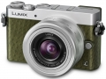

器材库 > APS及其以下画幅可换镜头数码相机 > DMC-GM5

规格总览
产品类型
M4/3画幅可换镜头数码相机
发布日期
2014-09-15
影像规格
影像传感器
Live MOS
影像传感器尺寸
17.3×13.0mm
总像素
1684万
有效像素
1600万
静态图像格式
JPEG, RAW, MPO
静态图像尺寸
[4:3] 4592×3448/3232×2424/2272×1704/1824×1368[3:2] 4592×3064/3232×2160/2272×1520/1824×1216[16:9] 4592×2584/3840×2160/1920×1080/1824×1024[1:1] 3424×3424/2416×2416/1712×1712/1712×1712
画幅比
3:2, 4:3, 16:9, 1:1
短片格式
AVCHD, MP4
短片尺寸
AVCHD Progressive1920×1080:60pAVCHD1920×1080:60i/30p/24pMP41920×1080:60p/30p，1280×720:30p，640×480:30p
除尘系统
超声波滤镜
镜头和对焦
镜头卡口
Micro 4/3
曝光控制
测光系统
1728区多模式传感系统
测光模式
中央重点测光, 点测光, 多重测光
测光范围
0EV~18EV
快门类型
电子控制焦平面快门
快门速度
静止图像：60 ~ 1/16000秒视频：1/25 ~ 1/16000秒
曝光补偿
±5EV以1/3EV级调整
ISO感光度
自动，智能ISO，ISO 100 / 200 / 400 / 800 / 1600 / 3200 / 6400 / 12800 / 25600 (可1/3EV级调整）
连拍
5.8帧/秒
闪光灯
闪光补偿
±3EV以1/3EV级调整
取景器/显示屏
取景器
电子取景器
取景范围
100%
取景放大倍率
约0.92倍
屈光度调节范围
-4.0～+4.0（dpt）
LCD尺寸
3.0英寸
LCD像素
约92万
视野率
约100%
LCD特性
触摸屏
文件输入/输出
存储卡
SD/SDHC, SDXC
数据接口
USB2.0
视频/音频接口
D型HDMI接口
无线功能
Wi-Fi
电源
电池
锂离子电池
续航能力
约260张
机身规格
颜色
黑色, 红色, 绿色
尺寸
98.5×59.5×36.1mm
重量
仅机身约180g / 含电池和存储卡约211g
其它
工作温度
0~40℃
工作湿度
10~80%
附件
锂离子电池，电池充电器，USB连接电缆，DVD，肩带，机身盖
该产品暂无存档的网友点评
产品图 / 样片
DMC-GM5